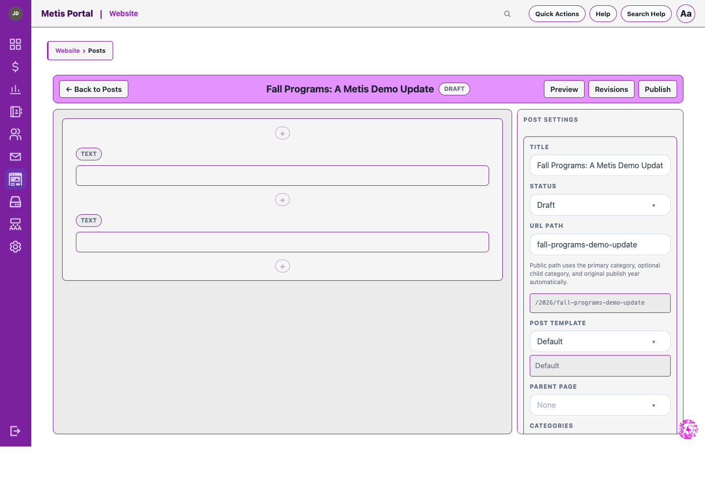

Engagement module
Website
Manage your public website with structured pages, posts, menus, media, publishing tools, and first-party analytics.
What it helps your team do
- Create pages and posts with categories, tags, media, menus, templates, reusable blocks, and theme controls.
- Work safely with autosaved drafts, revisions, preview, scheduled content, redirects, banners, and popups.
- Publish SEO essentials including a sitemap and robots file from shared services.
- Review first-party analytics for traffic, engagement, campaigns, and conversion actions.
Page and post editors

Good to know
Website analytics use no external provider and do not retain IP addresses, raw user agents, or query strings. Do Not Track and Global Privacy Control are respected.